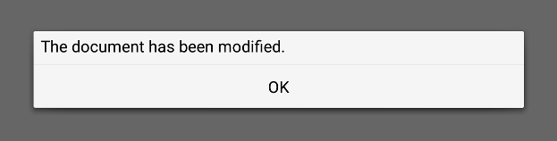

MessageDialog QML Type
A message dialog. More...
| Import Statement: | import QtQuick.Dialogs |
| Since: | Qt 6.3 |
| Inherits: |
Properties
- buttons : flags
- detailedText : string
- informativeText : string
- text : string
Signals
- buttonClicked(QPlatformDialogHelper::StandardButton button, QPlatformDialogHelper::ButtonRole role)
Detailed Description
The MessageDialog type provides a QML API for message dialogs.

A message dialog is used to inform the user, or ask the user a question. A message dialog displays a primary text to alert the user to a situation, an informative text to further explain the alert or to ask the user a question, and an optional detailed text to provide even more data if the user requests it. A message box can also display a configurable set of buttons for accepting a user response.
To show a message dialog, construct an instance of MessageDialog, set the desired properties, and call open().
MessageDialog { buttons: MessageDialog.Ok text: "The document has been modified." }
The user must click the OK button to dismiss the message dialog.
A more elaborate approach than just alerting the user to an event is to also ask the user what to do about it. Store the question in the informative text property, and specify the buttons property to the set of buttons you want as the set of user responses. The buttons are specified by combining values using the bitwise OR operator.
MessageDialog { text: "The document has been modified." informativeText: "Do you want to save your changes?" buttons: MessageDialog.Ok | MessageDialog.Cancel onAccepted: document.save() }
Availability
A native platform message dialog is currently available on the following platforms:
- Android
- iOS
- macOS
Qt Quick Dialogs uses a Qt Quick implementation as a fallback on platforms that do not have a native implementation available.
Property Documentation
buttons : flags |
This property holds a combination of buttons that are used by the message dialog. The default value is MessageDialog.NoButton.
Possible flags:
| Constant | Description |
|---|---|
MessageDialog.Ok | An "OK" button defined with the AcceptRole. |
MessageDialog.Open | An "Open" button defined with the AcceptRole. |
MessageDialog.Save | A "Save" button defined with the AcceptRole. |
MessageDialog.Cancel | A "Cancel" button defined with the RejectRole. |
MessageDialog.Close | A "Close" button defined with the RejectRole. |
MessageDialog.Discard | A "Discard" or "Don't Save" button, depending on the platform, defined with the DestructiveRole. |
MessageDialog.Apply | An "Apply" button defined with the ApplyRole. |
MessageDialog.Reset | A "Reset" button defined with the ResetRole. |
MessageDialog.RestoreDefaults | A "Restore Defaults" button defined with the ResetRole. |
MessageDialog.Help | A "Help" button defined with the HelpRole. |
MessageDialog.SaveAll | A "Save All" button defined with the AcceptRole. |
MessageDialog.Yes | A "Yes" button defined with the YesRole. |
MessageDialog.YesToAll | A "Yes to All" button defined with the YesRole. |
MessageDialog.No | A "No" button defined with the NoRole. |
MessageDialog.NoToAll | A "No to All" button defined with the NoRole. |
MessageDialog.Abort | An "Abort" button defined with the RejectRole. |
MessageDialog.Retry | A "Retry" button defined with the AcceptRole. |
MessageDialog.Ignore | An "Ignore" button defined with the AcceptRole. |
MessageDialog.NoButton | The dialog has no buttons. |
See also buttonClicked().
detailedText : string |
This property holds the text to be displayed in the details area.
See also text and informativeText.
informativeText : string |
This property holds the informative text that provides a fuller description for the message.
Informative text can be used to expand upon the text to give more information to the user.
See also text and detailedText.
text : string |
This property holds the text to be displayed on the message dialog.
See also informativeText and detailedText.
Signal Documentation
buttonClicked(QPlatformDialogHelper::StandardButton button, QPlatformDialogHelper::ButtonRole role) |
This signal is emitted when a button with the specified role is clicked.
By giving this signal a handler, you can respond to any custom button being pressed. The button argument tells which button was clicked, while the role argument tells the functional role of that button.
MessageDialog { id: dialog text: qsTr("The document has been modified.") informativeText: qsTr("Do you want to save your changes?") buttons: MessageDialog.Ok | MessageDialog.Cancel onButtonClicked: function (button, role) { switch (button) { case MessageDialog.Ok: document.save() break; } } }
Note: The corresponding handler is onButtonClicked.
See also buttons.